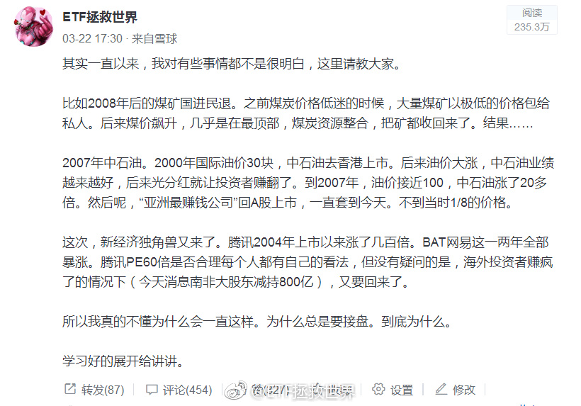

汽车是真正的周期股。这个，林奇在第一本书里就开宗明义的告诉你了。然而，只有当你一个上升周期赚几倍，或者一个下降周期赔得只剩20%的时候，才会真的懂。当然，这个周期，一般人很难把握。太多人把汽车当成成长股或者价值股了。都不是。它是周期股。BTW，感谢那次“捷达换宝马”。
回复@纸上的长河:对每个人来说是不同的。有人害怕第一个发生，所以不买。有人不怕第一个，害怕第二个发生自己手里没东西，所以买。你好好体会一下。//@纸上的长河:回复@小牛乐乐吧:小伙子你没看出来这2个选项是一样的吗？@ETF拯救世界:关于概率的选择题：1：有30%的概率下跌20%。2：有70%的概率上涨无限。你选哪个。你应该好好问问自己。
中概互联这些公司，本身并没有太大问题。哪怕一家有，做为一个整体也没太大问题。但是，非常关键的是，随着他们这个群体在国民经济生活中的重要性越来越大，真正的问题就出现了。这个我不多解释，懂的自然懂。所以，要不就是公私合营，要不就是想办法把你弄得小一点，分拆或者其它方法。永远也不可能让你那么强大。当你们做为真正的数据公司居然掌握了那谁都不掌握的东西，你说你会怎样。
我用一句话解答“为什么明知下跌还要买”两个字：概率。你永远也不可能绝对性的预测未来的涨跌。所以你要用概率来判断。最主要的应用就是根据概率布置仓位。比如这个月买中概，如果未来我打算给5%-6%的仓位，那么买入0.6%大概就是10%。10%你可以大概理解为：我认为它有90%的概率继续跌，10%的概率会上涨。又比如我们现在的A股仓位大致是55%。如果80%是满仓，也配置69%接近70%了。这意味着，我认为，现在有30%的概率继续跌，70%的概率就是底部区域。当然，其实我认为跌的概率更小，但计划会更保守一点，不用多说。再说一次，没有任何人能真正的预测绝对底部和顶部。谁说他能，他就是骗子或者傻子。那些喊xxxx点就是大底的人，要不就是无畏，要不就是无知，要不就是无畏以致无知了。投资就是投概率。概率大就重仓，概率低就轻仓。这里的关键就在于你如何判断概率，又如何根据概率配置仓位。是技术也是艺术。很有意思。
基金发行越“冷”，越是投资的好时候。反之亦然。2007年四只QDII发行。当日每只热销百亿，摇号配售。到现在还有净值不到0.5的。年初的合宜之类的就不用说了。还有前两年热发的定增基金。前几天看说，有基金发行就卖出去2.5万。你就知道这是投资的黄金时刻了。抢热门永远没什么好下场。
回复@崔梓夜:没懂这个月配置中概互联有什么问题？帖子是3月发的，当时所有中概股全部在高位。现在网易腰斩，京东腾讯下跌30%，配置0.6%仓位有问题吗。我还要继续买到5%呢。//@崔梓夜:回复@ETF拯救世界:应该是想问你，为什么发中概互联网的车吧@ETF拯救世界:偶然又翻到了当时的这个帖子。幸亏及时叫停，否则将是不亚于中石油的惨案。然而这样的事情都是怎么决策的。百思不得其解。就像好好的深成指，40只成分股，一定要在中小股票暴涨之后，换成500只成分股，从此一蹶不振。为什么这么喜欢追最近表现好的东西？从上到下都喜欢？ 
偶然又翻到了当时的这个帖子。幸亏及时叫停，否则将是不亚于中石油的惨案。然而这样的事情都是怎么决策的。百思不得其解。就像好好的深成指，40只成分股，一定要在中小股票暴涨之后，换成500只成分股，从此一蹶不振。为什么这么喜欢追最近表现好的东西？从上到下都喜欢？
“2002年获哈佛大学硕士学位，同年入职高盛亚洲。2008年晋升为高盛亚洲区执行董事，凭借努力，逐步晋升为高盛亚洲区董事总经理。”你们猜这说的是谁。//@华尔街见闻APP:投行薪水高，容易吸引年轻人@见闻企业家:【柳传志：年轻人第一份工作不要去投行，这样不扎实】柳传志接受@财约你 专访时表示，自己十分认同新希望集团董事长刘永好的观点：年轻人不要一出来工作就做投行，虽然收入高，但是不扎实，最好是在企业里摸爬滚打过再去做投资，这样比较沉稳 见闻企业家的秒拍视频 52万次播放 01:16
回复@老顾例外:闲庭信步是因为这样的局面我已经经历过三次，这是第四次。最坏会怎样，之后会怎样，心里大概有谱。放心，明明白白经历两次以后，你也会有谱的。踏踏实实的。指数不会死@财联社APP:【破净股数量增至267只 已在可交易股票中占比近8%】财联社9月11日讯，在大盘持续下行中，市场破净个股数量创下历史新高。截至昨日收盘，沪深两市共有267只个股股价跌破每股净资产，在两市所有可交易股票中占比近8%。分析人士认为，在经历了前期的深度调整之后，A股市场的整体估值水平已经处于历史低位，在横向和纵向水平上具备优势，破净股数量大幅增加，显示市场底部特征愈发明显。上述267只破净股主要集中在银行（61.5%）、房地产（25.9%）、采掘（22.03%）和钢铁（21.9%）等四行业，破净股占行业成份股总数比例均超20%。（证券日报）
回复@老顾例外:千万别因为我死扛。这一轮熊市下来a股整体跌幅超过50%，你浮亏5%就扛不住了，真的不要再扛，立即抽身离去再也不要回来。我是认真的。股市不是适合所有人的地方//@老顾例外:有点绝望了， -5% ， 没有E大的话，自己很难坚持了。@财联社APP:【破净股数量增至267只 已在可交易股票中占比近8%】财联社9月11日讯，在大盘持续下行中，市场破净个股数量创下历史新高。截至昨日收盘，沪深两市共有267只个股股价跌破每股净资产，在两市所有可交易股票中占比近8%。分析人士认为，在经历了前期的深度调整之后，A股市场的整体估值水平已经处于历史低位，在横向和纵向水平上具备优势，破净股数量大幅增加，显示市场底部特征愈发明显。上述267只破净股主要集中在银行（61.5%）、房地产（25.9%）、采掘（22.03%）和钢铁（21.9%）等四行业，破净股占行业成份股总数比例均超20%。（证券日报）
30%破净是A股绝对大底，就是不知道能不能到了……@财联社APP:【破净股数量增至267只 已在可交易股票中占比近8%】财联社9月11日讯，在大盘持续下行中，市场破净个股数量创下历史新高。截至昨日收盘，沪深两市共有267只个股股价跌破每股净资产，在两市所有可交易股票中占比近8%。分析人士认为，在经历了前期的深度调整之后，A股市场的整体估值水平已经处于历史低位，在横向和纵向水平上具备优势，破净股数量大幅增加，显示市场底部特征愈发明显。上述267只破净股主要集中在银行（61.5%）、房地产（25.9%）、采掘（22.03%）和钢铁（21.9%）等四行业，破净股占行业成份股总数比例均超20%。（证券日报）